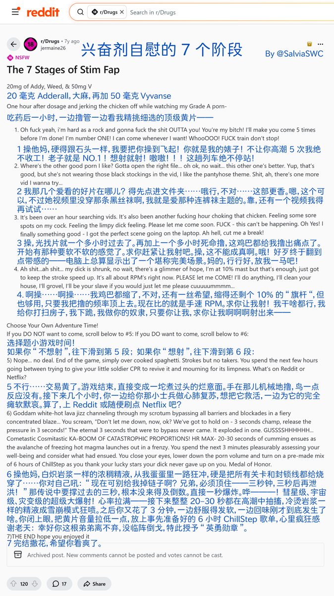

鼠尾草～🌿
@SalviaSWC

鼠尾草～🌿
@SalviaSWC
药物报告连载之《兴奋剂 #自慰 的7个阶段》
吃兴奋剂看片撸管的实录，性欲大大加强，快感大大提升，但是过一段时间就会硬不起来。
啊？？？哈哈哈哈哈哈好离谱。但那种偏执感，控制感，确实也是兴奋剂药效的特征🤓
不过请勿使用西地那非等药物反制这里硬不起来的问题哦🥹这会导致更严重的心血管问题 https://t.co/oxGTM6av36
鼠尾草～🌿
@SalviaSWC
https://t.co/jbINVX0TQT